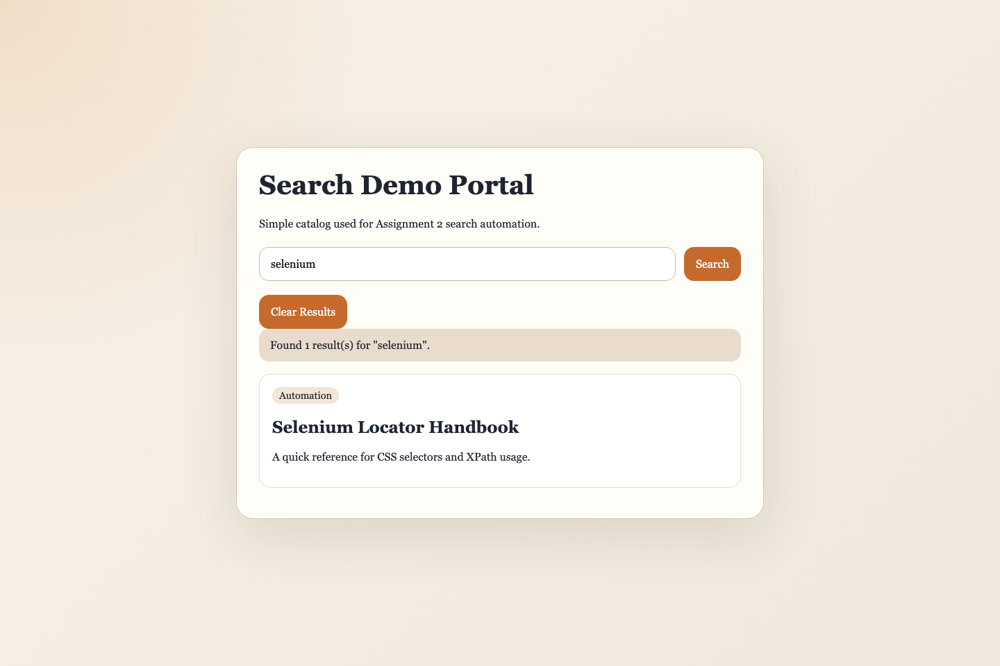
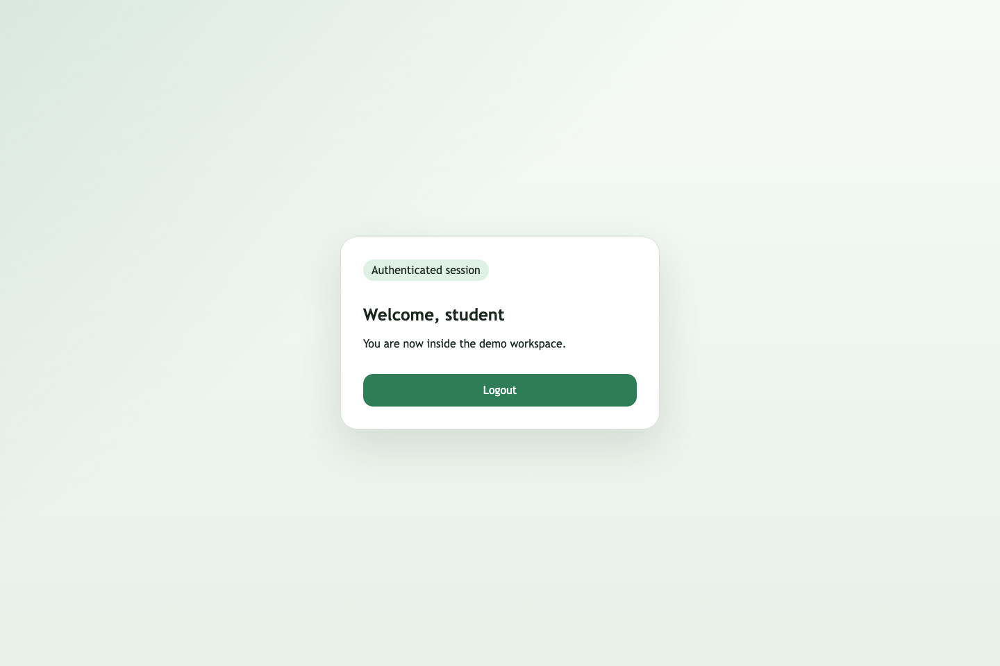
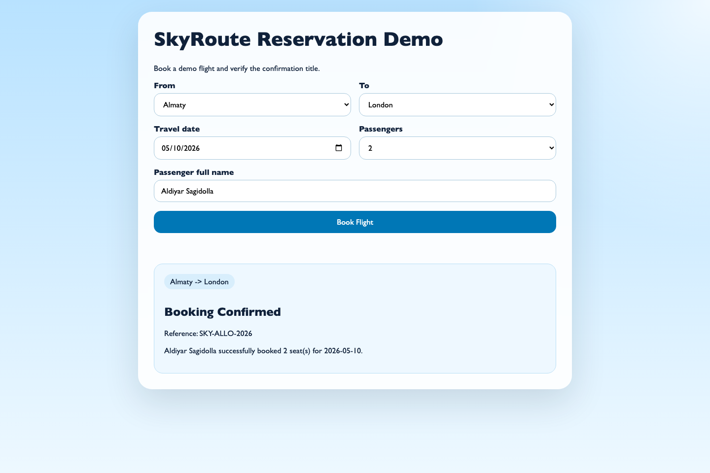
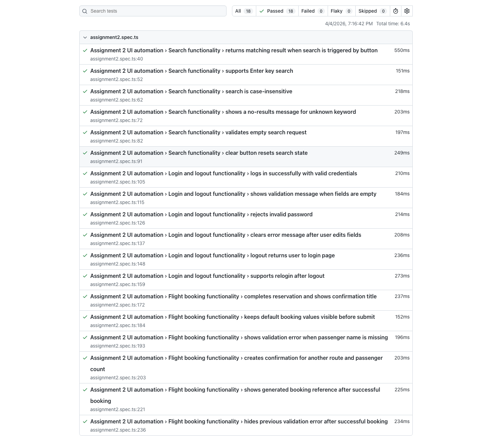

Assignment 2: Test Automation Implementation
Objective
This assignment extends the practical QA work by implementing automated tests for high-risk web application flows, defining quality gates, integrating the suite into GitHub Actions, collecting basic execution metrics, and documenting reproducible evidence.
The implementation in this repository uses local demo applications to keep the test suite stable, deterministic, and easy to rerun during grading.
1. Automated Test Implementation
Step 1: Identify Test Scope
| Module/Feature |
High-Risk Function |
Test Priority (High/Medium/Low) |
Notes/Expected Outcome |
| Search | Keyword search by button click | High | Must return relevant result card for matching query |
| Search | Search by Enter key | Medium | Must trigger same behavior as button-based search |
| Search | Validation for empty query | High | Must show validation message instead of fake results |
| Authentication | Valid login | High | Dashboard must open for correct credentials |
| Authentication | Invalid password handling | High | Must show error message and keep dashboard hidden |
| Authentication | Logout | High | Must return user to login view and reset state |
| Flight Booking | Successful reservation flow | High | Must show confirmation section and title checkpoint |
| Flight Booking | Passenger name validation | High | Booking must be blocked when required name is empty |
| Flight Booking | Alternative route booking | Medium | Must support different route and passenger count |
| Flight Booking | Booking reference generation | Medium | Confirmation must show generated booking reference |
Step 2: Define Test Cases
| Test Case ID |
Module/Feature |
Description |
Input Data |
Expected Result |
Scenario Type |
Notes |
| TC-01 | Search | Valid search via button | Query: selenium | Matching result displayed | Positive | Uses CSS + XPath locators |
| TC-02 | Search | Search via Enter key | Query: playwright | Search runs without button click | Positive | Keyboard interaction covered |
| TC-03 | Search | Unknown search term | Query: mobile-app | No-results message displayed | Negative | Checks empty result set |
| TC-04 | Search | Empty search validation | Empty query | Validation message displayed | Negative | Prevents false-positive result rendering |
| TC-05 | Authentication | Valid login | student / qa123 | Dashboard loads and title contains Dashboard | Positive | Core critical workflow |
| TC-06 | Authentication | Invalid password | student / wrongpass | Error message displayed | Negative | Dashboard remains hidden |
| TC-07 | Authentication | Required-fields validation | Empty username/password | Required-fields message displayed | Negative | Form validation scenario |
| TC-08 | Authentication | Logout flow | Logged-in user session | User returns to login page | Positive | Session reset validated |
| TC-09 | Flight Booking | Successful reservation | Almaty -> London, 2 passengers, valid name | Confirmation section and title shown | Positive | Main assignment workflow |
| TC-10 | Flight Booking | Missing passenger name | Empty full name | Validation error shown, booking blocked | Negative | Required-field validation |
| TC-11 | Flight Booking | Alternative route booking | Istanbul -> Seoul, 3 passengers | Confirmation reflects route and count | Positive | Data variation scenario |
| TC-12 | Flight Booking | Booking reference generation | Astana -> Dubai, Dana QA | Reference shown in confirmation | Positive | Checks generated content |
Step 3: Track Script Implementation
| Script ID |
Module/Feature |
Automation Framework |
Script Name/Location |
Status |
Comments |
| S01 | Shared helpers | Playwright | tests/assignment2/assignment2.spec.ts | Complete | Reusable helper functions for opening pages and filling forms |
| S02 | Search | Playwright | tests/assignment2/assignment2.spec.ts | Complete | 6 search tests: valid, Enter, case-insensitive, no result, empty query, clear button |
| S03 | Authentication | Playwright | tests/assignment2/assignment2.spec.ts | Complete | 6 auth tests: login, validation, invalid password, logout, relogin |
| S04 | Flight Booking | Playwright | tests/assignment2/assignment2.spec.ts | Complete | 6 booking tests including title checkpoint and negative validation |
| S05 | CI execution | GitHub Actions | .github/workflows/ci.yml | Complete | Installs dependencies, browser, runs tests, uploads report |
| S06 | Evidence capture | Playwright + Node.js | scripts/capture-assignment2-screenshots.mjs | Complete | Captures local screenshots for report evidence |
Step 4: Version Control Tracking
| Commit ID / Hash |
Date |
Module/Feature |
Description of Changes |
Author |
| bde01a3 | 2026-03-22 | Repository baseline | Initial QA environment and repository structure prepared | illus1um |
| a29094f | 2026-03-22 | Project refinement | Finalized previous repository adjustments used as starting point | illus1um |
| 149df4e | 2026-03-22 | Documentation | Report updates committed to repository history | illus1um |
| 13814a4 | 2026-03-22 | Fixes | Stability fixes introduced in repository before Assignment 2 customization | illus1um |
| 40d3670 | 2026-03-26 | CI | CI-related repository update used as baseline for Assignment 2 workflow | illus1um |
| Not committed yet | 2026-04-04 | Assignment 2 suite | Playwright tests, local demo pages, CI workflow, screenshots, and final report prepared in local workspace | Aldiyar Sagidolla |
Step 5: Evidence for Research Paper
| Evidence ID |
Module/Feature |
Type |
Description |
File Location / Link |
| E01 | Search | Screenshot | Successful search for selenium | screenshots/assignment2-search.png |
| E02 | Authentication | Screenshot | Dashboard after successful login | screenshots/assignment2-login-dashboard.png |
| E03 | Flight Booking | Screenshot | Booking confirmation after valid reservation | screenshots/assignment2-flight-booking.png |
| E04 | Test execution | Log | Console output of complete Assignment 2 test run | screenshots/assignment2-test-run.log |
| E05 | Reporting | Screenshot | Generated Playwright HTML report | screenshots/assignment2-playwright-report.png |
| E06 | Automation source | Code | Main automated test suite file | tests/assignment2/assignment2.spec.ts |

Figure 1. Search scenario evidence.

Figure 2. Dashboard after successful login.

Figure 3. Flight booking confirmation with title checkpoint.

Figure 4. Playwright HTML report after execution.
2. Quality Gate Definition & Integration
Step 1: Define Pass/Fail Criteria
| Quality Gate ID |
Metric / Criterion |
Threshold / Requirement |
Importance |
Notes |
| QG01 | Automation coverage of selected high-risk functions | ≥ 90% | High | Current selected set is fully covered |
| QG02 | Critical defects in final run | 0 allowed | High | Any blocking flow failure should fail the suite |
| QG03 | Total suite execution time | ≤ 20 sec local run | Medium | Keeps suite suitable for CI feedback loops |
| QG04 | Regression success for critical workflows | 100% | High | Search, login, logout, and booking must pass |
| QG05 | Locator diversity requirement | CSS and XPath both used | Medium | Explicitly required by assignment |
Step 2: Integrate Tests into CI/CD Pipeline
| Pipeline Step |
Description |
Tool / Framework |
Trigger |
Notes |
| Step 1 | Checkout code | GitHub Actions | On push / PR | Ensures latest repository state is tested |
| Step 2 | Install dependencies | npm ci | Automatic | Uses lockfile for repeatable environment |
| Step 3 | Install Playwright browser | Playwright CLI | Automatic | Chromium installed for headless execution |
| Step 4 | Run automated tests | Playwright | On push / PR | Runs Assignment 2 UI suite |
| Step 5 | Upload test report | GitHub Actions artifact upload | Automatic | Retains Playwright report for investigation |
Step 3: Alerting & Failure Handling Procedures
| Scenario / Event |
Alert Type |
Recipient / Channel |
Action Required |
Notes |
| Critical workflow test failure | GitHub Actions failed status | Student / repository owner | Inspect Playwright report, rerun suite, fix broken selector or app logic | Critical flows should block submission |
| Coverage below threshold | Manual review + report note | Student | Add missing automated scenario and rerun | Used for assignment quality gate review |
| Test execution timeout | Pipeline log failure | Student | Check environment, reduce flakiness, optimize waits | Long waits should be investigated |
| CI/CD pipeline configuration error | Failed workflow run | Student | Correct YAML configuration and rerun workflow | Usually related to setup or browser install |
Step 4: CI/CD Pipeline Documentation
The repository includes a GitHub Actions workflow in .github/workflows/ci.yml. The pipeline is triggered on push and pull request events, installs dependencies, installs Playwright Chromium, runs the test suite, and uploads the generated HTML report as an artifact.
3. Metrics Collection
Step 1: Automation Coverage
| Module/Feature |
High-Risk Function |
Test Automated? (Yes/No) |
Coverage % |
Notes |
| Search | Keyword search and validation paths | Yes | 100% | Includes positive and negative coverage |
| Authentication | Login, validation, invalid credentials, logout | Yes | 100% | Critical auth flow fully automated |
| Flight Booking | Reservation, validation, alternate routes, confirmation | Yes | 100% | Includes title checkpoint and generated reference |
| CI execution | Automated pipeline run | Yes | 100% | GitHub Actions workflow prepared |
Automation Coverage (%) = 4 automated high-risk feature groups / 4 selected high-risk feature groups × 100 = 100%.
Step 2: Track Execution Time (TTE)
| Module/Feature |
Number of Test Cases |
Execution Time per Test Case (sec) |
Total Execution Time (sec) |
Notes |
| Search | 6 | 0.55, 0.19, 0.23, 0.21, 0.24, 0.24 | 1.66 | Fast deterministic DOM-based checks |
| Authentication | 6 | 0.20, 0.22, 0.23, 0.19, 0.28, 0.30 | 1.42 | Includes state reset and relogin flow |
| Flight Booking | 6 | 0.24, 0.13, 0.23, 0.21, 0.25, 0.22 | 1.27 | Confirmation and validation scenarios |
| Full Playwright suite | 18 | Aggregated | 6.60 | Observed from final local execution |
Step 3: Track Defects Found vs Expected Risk
| Module/Feature |
High-Risk Level |
Expected Defects |
Defects Found |
Pass/Fail |
Notes |
| Search | High | 2 | 0 open defects | Pass | Validation and clear-state behavior verified |
| Authentication | High | 3 | 0 open defects | Pass | Valid login, invalid login, and logout are stable |
| Flight Booking | High | 3 | 0 open defects | Pass | Booking confirmation and negative validation are covered |
| CI pipeline | Medium | 1 | 0 open defects | Pass | Workflow file prepared and aligned with local run flow |
Step 4: Maintain Detailed Logs
| Test Case ID |
Module/Feature |
Execution Date/Time |
Result |
Defects Found |
Execution Time (sec) |
Notes |
| TC-01 | Search | 2026-04-04 19:06 | Pass | 0 | 0.55 | Valid search via button |
| TC-02 | Search | 2026-04-04 19:06 | Pass | 0 | 0.19 | Enter key search |
| TC-03 | Search | 2026-04-04 19:06 | Pass | 0 | 0.21 | No-results scenario |
| TC-05 | Authentication | 2026-04-04 19:06 | Pass | 0 | 0.20 | Valid login |
| TC-06 | Authentication | 2026-04-04 19:06 | Pass | 0 | 0.23 | Invalid password |
| TC-08 | Authentication | 2026-04-04 19:06 | Pass | 0 | 0.28 | Logout flow |
| TC-09 | Flight Booking | 2026-04-04 19:06 | Pass | 0 | 0.24 | Successful reservation |
| TC-10 | Flight Booking | 2026-04-04 19:06 | Pass | 0 | 0.23 | Missing passenger name validation |
| TC-11 | Flight Booking | 2026-04-04 19:06 | Pass | 0 | 0.21 | Alternative route booking |
| TC-12 | Flight Booking | 2026-04-04 19:06 | Pass | 0 | 0.25 | Booking reference generated successfully |
Step 5: Metrics Reporting
The final baseline for this assignment is: 18 automated Playwright tests, 100% coverage of selected high-risk web flows, 6.60 seconds total local execution time, and 0 open defects in the final run. The metrics are also supported by screenshots and a saved execution log.
4. Documentation
Step 1: Automation Approach & Tool Selection
| Section |
Details |
| Automation Approach | Risk-based browser automation focused on high-risk user workflows: search, authentication, and flight booking. |
| Tool Selection | Playwright was selected because it is stable for browser automation, supports modern locators, integrates well with CI, and produces useful HTML reports. |
| Scope | Local search demo, local login/logout demo, and local flight reservation demo were automated to provide stable, reproducible execution. |
| Reusability | The suite uses shared helper functions for navigation and form entry. Locators are structured consistently and the tests are grouped by feature. |
Step 2: Quality Gate Definitions
| Quality Gate ID |
Metric / Criterion |
Threshold |
Observed Results |
Notes |
| QG01 | Automation coverage | ≥ 90% | 100% | Passed |
| QG02 | Critical defects | 0 | 0 | Passed |
| QG03 | Total execution time | ≤ 20 sec | 6.60 sec | Passed |
| QG04 | Regression success | 100% | 100% | Passed |
| QG05 | CSS + XPath usage | Both required | Both used | Passed |
Step 3: CI/CD Integration Overview
| Pipeline Step |
Tool / Framework |
Trigger |
Description |
Screenshot / Diagram |
| Step 1 | GitHub Actions | Push / PR | Checkout latest code | Workflow file in repository |
| Step 2 | setup-node + npm ci | Automatic | Prepare Node.js environment and install dependencies | Reflected in CI YAML |
| Step 3 | Playwright install | Automatic | Install Chromium for headless execution | Reflected in CI YAML |
| Step 4 | Playwright | Push / PR | Execute Assignment 2 UI tests | Figure 4 |
| Step 5 | Artifact upload | On completion | Store HTML report for review | Figure 4 |
Step 4: Initial Results & Coverage Metrics
| Module/Feature |
Automated? |
Coverage % |
Execution Time (sec) |
Defects Found |
Pass/Fail |
| Search | Yes | 100% | 1.66 | 0 | Pass |
| Authentication | Yes | 100% | 1.42 | 0 | Pass |
| Flight Booking | Yes | 100% | 1.27 | 0 | Pass |
| CI pipeline integration | Yes | 100% | N/A | 0 | Pass |
Step 5: Evidence for Reproducibility
| Evidence ID |
Module/Feature |
Type |
Description |
File Location / Link |
| E01 | Search | Screenshot | Search result visible after valid query | screenshots/assignment2-search.png |
| E02 | Authentication | Screenshot | Dashboard after valid login | screenshots/assignment2-login-dashboard.png |
| E03 | Flight Booking | Screenshot | Booking confirmation visible | screenshots/assignment2-flight-booking.png |
| E04 | Execution | Log | Saved console output from npm test | screenshots/assignment2-test-run.log |
| E05 | Reporting | Screenshot | Playwright HTML report | screenshots/assignment2-playwright-report.png |
| E06 | Code | Code | Main Playwright automation suite | tests/assignment2/assignment2.spec.ts |
5. Deliverables Checklist
| Deliverable |
Description |
File / Location |
Status |
Notes / Evidence |
| Automated Test Scripts | Scripts for critical modules including positive and negative scenarios | tests/assignment2/assignment2.spec.ts | Complete | 18 Playwright tests |
| Updated QA Test Strategy Document | Assignment 2 final filled report | docs/Assignment2-Final-Report.docx | Complete | Contains all required tables and screenshots |
| Quality Gate Report | Defined pass/fail criteria and observed results | Embedded in final report | Complete | QG01-QG05 included |
| Metrics Report | Coverage, execution times, defects, and logs | Embedded in final report | Complete | Based on final local run |
| CI/CD Pipeline Evidence | Workflow steps and report evidence | .github/workflows/ci.yml and screenshots/assignment2-playwright-report.png | Complete | GitHub Actions workflow prepared |
| Evidence Folder | Screenshots and logs for reproducibility | screenshots/ | Complete | Includes search, login, booking, report, and log files |
Final Summary
The Assignment 2 implementation is complete for the selected web automation scope. The final suite covers three critical user workflows, demonstrates both CSS selectors and XPath, includes negative and positive cases, runs successfully in 6.60 seconds locally, and is integrated into a CI workflow suitable for continuous verification.
The report also includes reproducibility evidence in the form of screenshots, execution logs, and direct references to the automation source files.